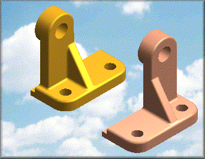

Inserting part copies
You can construct new parts using a copy of an existing part or assembly. The copied part can be the base feature of the new part, or used as construction geometry. You can copy the entire part or only the geometry you specify. The part copy can be associative to the original if the part is inserted in the ordered environment. The part copy is not associative if inserted in the synchronous environment. A part copy can be moved from the ordered environment to the synchronous environment. The part copy loses its associativity to the original when moved to the synchronous environment.
You can also set options for scaling, mirroring, and flattening the copied part.
For example, it is common for an assembly to contain both right hand and left hand versions of the same part.

Using the Part Copy command, you can construct a mirror-copy that updates when the original part is changed. You can also add features to the copy independently of the original part, and still maintain an associative link to the base part you started with.
The Part Copy command is also useful when working with in-process parts. For example, you can insert a part copy of a machined part into a new document, and then add the additional material required for constructing the casting.
You can create a copied part using the following file types as input:
-
Solid Edge Part (.par)
-
Solid Edge Sheet Metal (.psm)
-
Solid Edge Assembly (.asm)
-
NX Part (.prt)
-
Parasolid native files (X_T and X_B)
-
DirectModel (.jt)
How do I
Create a part copyPaste an element with a different format
Look up more details
Part Copy commandPart Copy command bar
Part Copy Parameters dialog box
Update Part Copies dialog box
Update Part Copies dialog box (Out-of-Date Parts)
Select Part Copy dialog box
Paste Special command
Paste Special dialog box